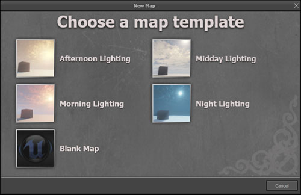
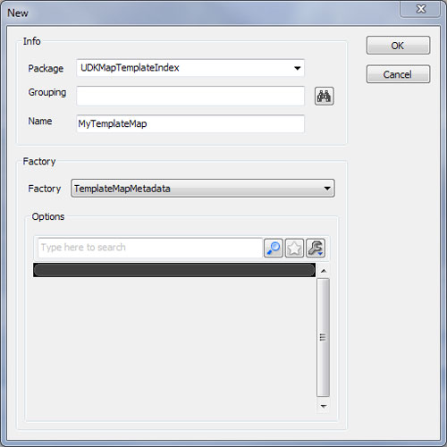
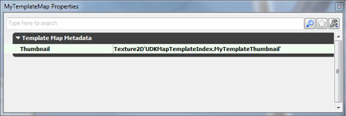
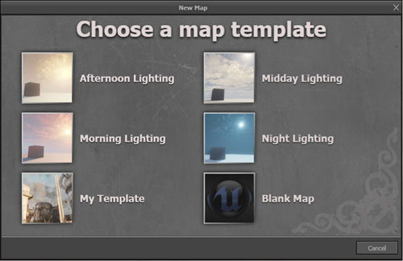

UDN
Search public documentation:
CreatingANewMap
日本語訳
中国翻译
한국어
Interested in the Unreal Engine?
Visit the Unreal Technology site.
Looking for jobs and company info?
Check out the Epic games site.
Questions about support via UDN?
Contact the UDN Staff
中国翻译
한국어
Interested in the Unreal Engine?
Visit the Unreal Technology site.
Looking for jobs and company info?
Check out the Epic games site.
Questions about support via UDN?
Contact the UDN Staff
UE3 Home > Unreal Editor and Tools > Creating A New Map
Creating A New Map
Overview
Map Templates


Startup Template
[UnrealEd.SimpleMap] in the config file. The SimpleMap is loaded into an untitled level in the same way as any template so the user can't accidentally overwrite the original.
New Map Screen

The new map screen shows the available templates and an option to begin with a blank map. Simply click your selection and your new map will be started. When starting a new map you will be prompted to save any unsaved work. Regardless of whether you begin with an empty map or a template, your map will begin untitled so you can’t accidentally save over the template maps. At present, the UDK includes simple lighting templates so that you can create a lit map easily without having to setup complex lighting parameters.Adding template maps
- Save your template map to the UDKGame template map folder UDKGame\Content\Maps\Templates. Save it with the file extension umap, e.g. MyTemplateMap.umap.
- Run Unreal Editor and select the always-loaded package UDKMapTemplateIndex in the content browser. The package contains a TemplateMapMetadata for each user-added template map.
- To add your template to the index, create a new TemplateMapMetadata object by clicking New in the content browser or by right-clicking the asset panel background and selecting ‘New TemplateMapMetadata’.

Name your metadata object to match your template map file. So if your template map is called MyTemplateMap.umap, name your metadata object MyTemplateMap, then click OK. - To add an illustrative thumbnail, prepare a suitable image file and import the image into the current package as a Texture by right-clicking the asset panel background and selecting ‘Import...’. Give it any appropriate name. Default import settings should be fine.
- To use the thumbnail, edit your TemplateMapMetadata by double-clicking or by right-clicking and selecting Properties... Set the texture as the Thumbnail property.

- Save changes to UDKMapTemplateIndex
- The display name of templates on the New Map Screen is localized meaning the default international text for your template needs to be defined in UDKGame\Localization\INT\EditorMapTemplates.int. See Localization Reference. You’ll need something like this:
[TemplateMapMetadata.DisplayNames] MyTemplateMap=My Template
- Close Unreal Editor and restart it. Your template should appear on the New Map Screen.
